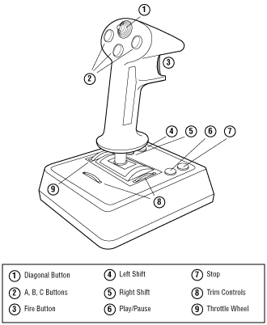
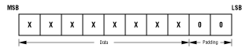

Table 1: Joystick versions and features.
--------------------------------------------------------
Feature |Description
--------------------------------------------------------
4 single buttons |Includes one fire button in the index
|finger position,and three additional
|buttons (A, B, and C) on the extended
|joystick handle.
--------------------------------------------------------
4Ðway switch |Located in thumb position. The consumer
|extended joystick comes with a single
|4-way switch, or 4 single buttons
|placed in a diamond pattern.
--------------------------------------------------------
x and y axis |Consumer versions of the extended
movement |joystick are permitted a maximum of
|10-bit precision in each direction.
|8-bit precision is the minimum allowed.
--------------------------------------------------------
Auxiliary axis |Consumer versions of the extended
control |joystick are permitted a maximum of
|10-bit precision in each direction.
|8-bit precision is the minimum allowed.
--------------------------------------------------------
Left-shift, |These features are implemented with
right-shift, |single buttons mounted on the base of
stop, play/pause |the extended joystick.
--------------------------------------------------------
Figure 1 shows the placement of controls on the extended joystick.

Figure 1: Extended joystick controls.
Bit Order
When 8-bit precision is used, the two least-significant bits are padded
with zeros to fill all 10 bits available, as shown in Figure 2.

Figure 2: Bit layout for 8-bit precision.